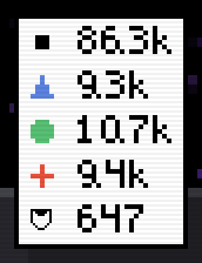
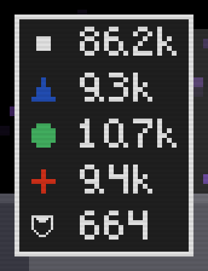
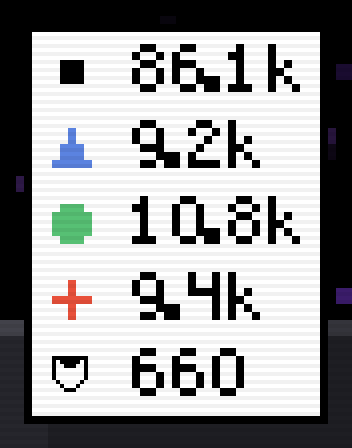
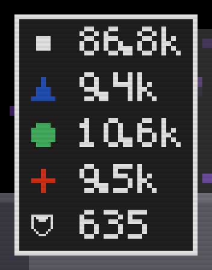
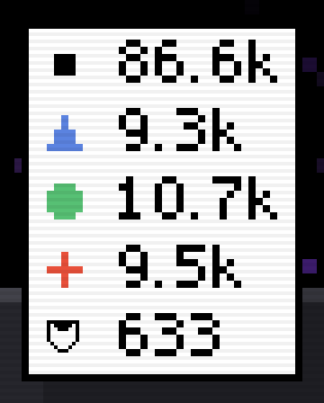
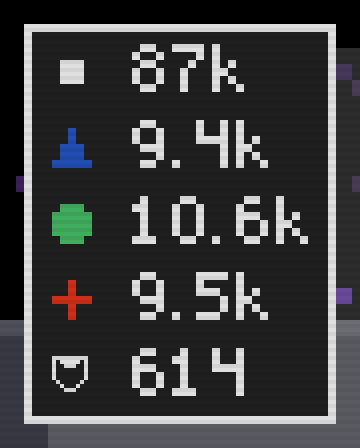
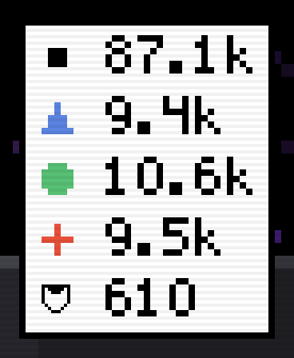
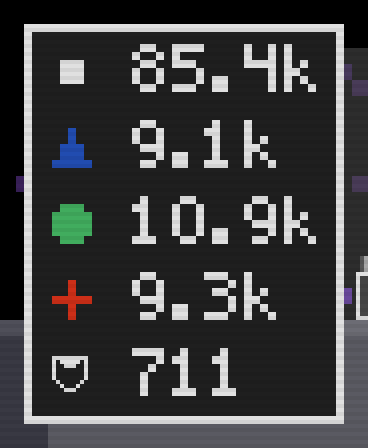

The decimal point in the counter's digits
Shot off the real game: the counter card in the deep at 800x600, the glyph patched in NUM_FONT for each shot, cropped and blown up 4x nearest-neighbor. Light theme on the left of each pair, dark on the right. The counts are live, so the numbers differ shot to shot. A glyph is 6 font pixels tall, each 2 screen pixels, with a 1-pixel paper keyline.







